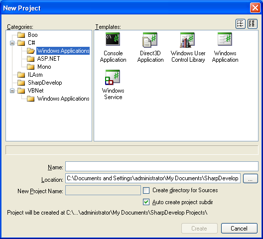

SharpDevelop provides many different types of project that you can create from the New Project dialog.
To open the New Project dialog, from the File menu select New and then select Solution....
Alternatively you can add a new project to a solution, from the Projects Explorer right click the name of the solution, select Add and then select New Project....

The project templates are grouped into categories and subcategories. Clicking a category displays the corresponding templates on the right hand side of the dialog.
In each category there are a set of project templates. When a template is selected a description is displayed below the category and template list.The list of templates can be displayed with large icons, as above, or with small icons, shown below, by clicking the buttons above the template list.
The Name text box allows you to specify the name of the project. The solution and project file will use this name.
The Location text box is used to specify the base folder where the project will be created. You can type in the folder directly or click the Browse button to open the Browse for Folder dialog box.
The final folder where the project will be created is affected by the Create directory for Sources check box and the Auto create project subdir check box. If both these check boxes are not checked then the project and solution will be created in the Location folder. If Auto create project subdir is checked then the project and solution will be created in a subfolder named after the project. If Create directory for Sources is checked then the project file and the source files will be created in the New Project Name folder.
The New Project Name text box is only enabled if the Create directory for Sources check box has been selected. The New Project Name text box allows you to specify the folder name that will contain the project file and the generated source files. The solution will be created in the parent folder.
With Create directory for Sources checked a separate folder will be created, with the name specified in the New Project Name text box, and will contain the project file and the generated source files. The solution file will be created in the parent folder.
The Auto create project subdir check box is used to create a project subfolder inside the Location folder. This folder is named after the project. If only this option is selected then the solution and project will be created in the project subfolder.
Creates the new project and opens it inside SharpDevelop.
Closes the New Project dialog box without creating a new project.